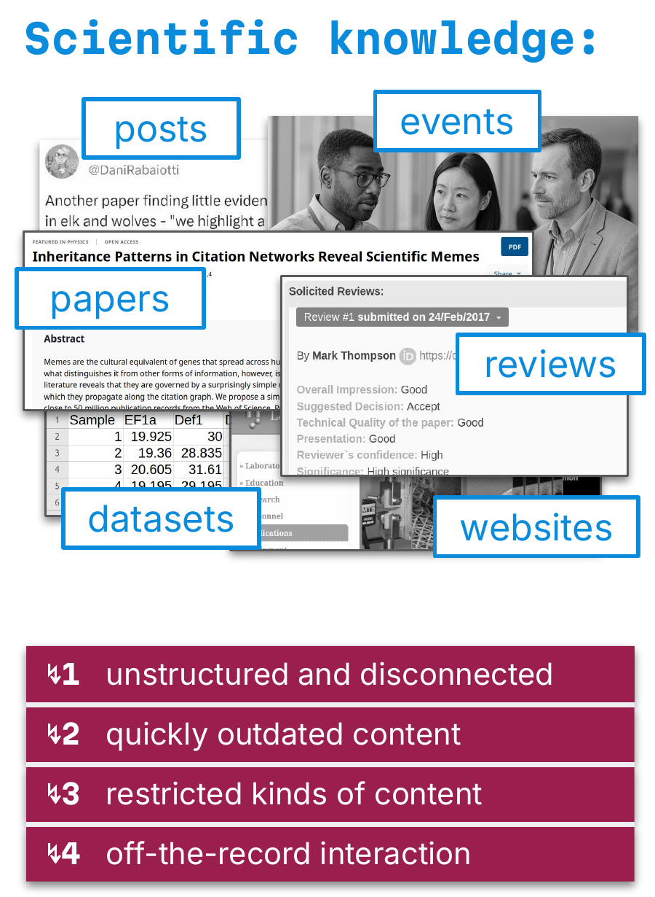
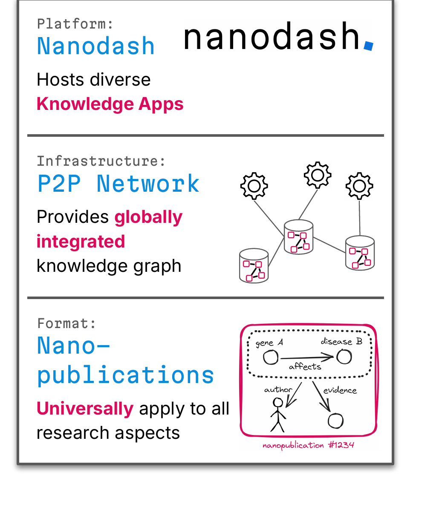
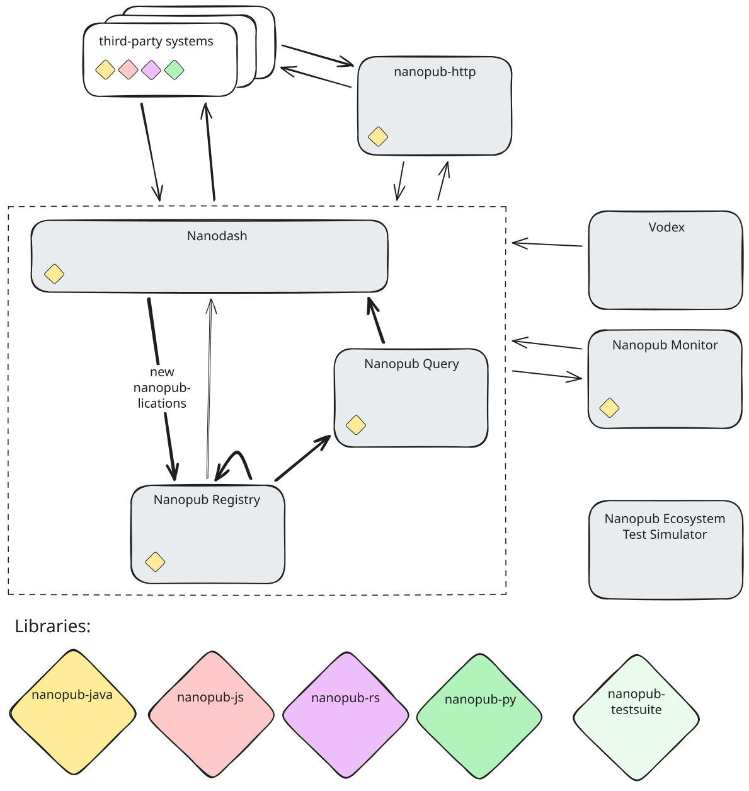
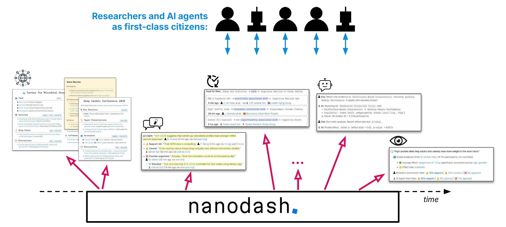
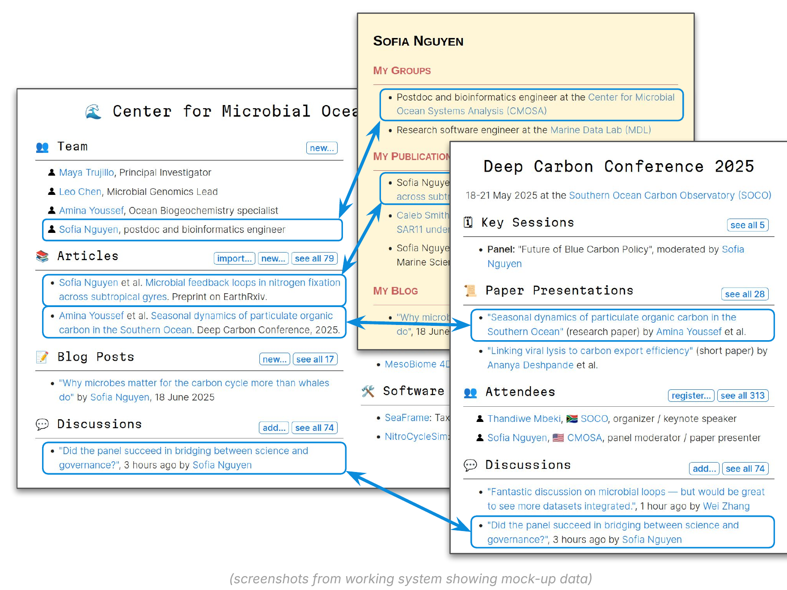
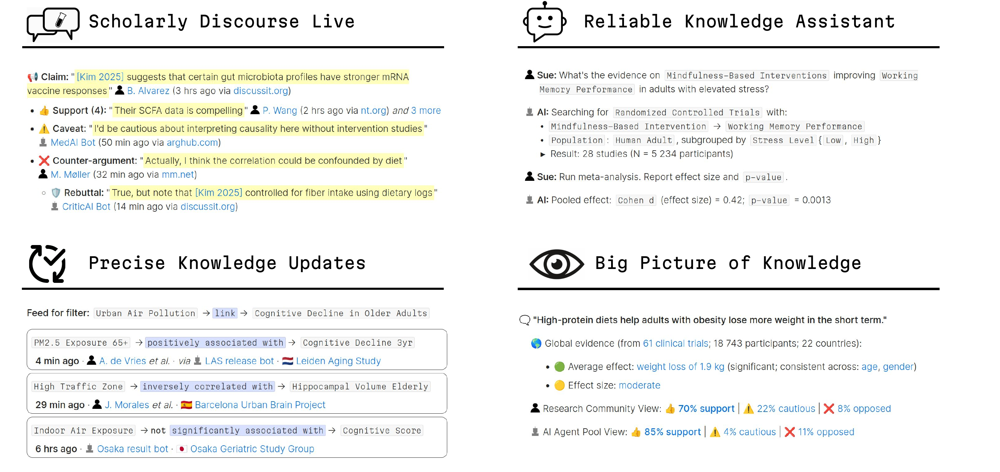

Nanopublications: a decentralized common for research knowledge
More details about this document
- Authors
- Ashley Caselli
- Virginia Balseiro
- Publisher
- Knowledge Pixels
- Published
- Language
- English
- Document Type
- Slideshow
- Audience
pixels
Nanopublications: a decentralized common for research knowledge
RDF & Linked Data seminar, University of Geneva, Geneva,
 Ashley Caselli
https://orcid.org/0000-0001-8492-0354
Knowledge Pixels
Ashley Caselli
https://orcid.org/0000-0001-8492-0354
Knowledge Pixels
 Virginia Balseiro
https://virginiabalseiro.com/#me
@yesvirginia
Virginia Balseiro
https://virginiabalseiro.com/#me
@yesvirginia
The Problem: research is shared as documents
What we want to find, compare, reuse and credit are the pieces inside:
- claims and findings
- datasets and methods
- reviews, opinions, individual contributions
Today these are locked in PDFs, scattered across posts, events, websites and repositories — unstructured, quickly outdated, and hard to attribute.

Nanopublications: claims as first-class citizens
Head · https://w3id.org/np/RA…
Assertion
the claim itself — e.g. gene A affects disease B
Provenance
where the assertion comes from — study, dataset, method
Publication info
who published it, when, licence, signature
- Small, self-contained snippet of a knowledge graph (RDF)
- Each carries its own attribution and provenance
- Signed by its author
- Identified by a content-derived trusty URI → immutable, verifiable, citable
- Together: one decentralized knowledge graph, not another silo
Trusty URIs: immutable and verifiable
1 · Content
assertion + provenance + pubinfo, normalized
2 · Sign
author's private key signs the content
3 · Hash
hash of content + signature becomes the ID: …/np/RA…
4 · Verify
anyone can recompute the hash and check the signature
Consequence: a changed nanopublication is a new nanopublication. Updates and retractions are themselves published — nothing is silently overwritten.
The Ecosystem: from format to platform

Architecture: how the pieces fit together

Core network
- Nanopub Registry: stores, validates and replicates
- Nanopub Query: SPARQL and query APIs on top
- Nanodash: publishes new nanopubs, reads via Query
Around it
- nanopub-http bridges third-party systems
- Nanopub Monitor, Vodex, Ecosystem Test Simulator
Libraries
- nanopub-java · -js · -rs · -py, plus a shared testsuite
Registries: a decentralized network
- Anyone can publish to any registry
- Registries replicate each other's content
- Every nanopublication is validated on arrival: well-formed, signature and trusty URI check
- No single point of failure or control
- [Add current numbers: registries, nanopublications, agents]
Query services: SPARQL and ready-made APIs
PREFIX np: <http://www.nanopub.org/nschema#>
PREFIX dct: <http://purl.org/dc/terms/>
SELECT ?np ?creator ?date WHERE {
?np a np:Nanopublication ;
dct:creator ?creator ;
dct:created ?date .
}
ORDER BY DESC(?date) LIMIT 10- All published nanopublications exposed as SPARQL endpoints
- Ready-made query APIs: parameterized queries that are themselves published as nanopublications
- Results as JSON/CSV for apps, dashboards and scripts
- [Replace with a query from your real use case + live endpoint URL]
Trust layer: keys bound to identities
Why it matters: attribution is cryptographic, not just a name in a metadata field, and it works across every registry and application.
Nanodash: publishing without writing RDF

Templates
forms generate valid, signed nanopublications
Spaces
communities, projects, groups get their own space
Views
live, queryable views over everything published
Clients: not just Nanodash any more
What this enables for research & data management
Citable units
every claim, dataset description or review is individually citable, with clear attribution
FAIR by construction
machine-actionable metadata with persistent IDs, standard vocabularies and explicit licences
Explicit provenance & retraction
updates and retractions are published nanopubs linked to the original — nothing silently disappears
Trustworthy layer for AI agents
agents read signed, attributed knowledge and publish back under their own identity
Spaces: groups, projects, conferences

- Research groups, projects, organizations, communities and events each get a space
- Content is contributed by members and AI agents as nanopublications
- Views update instantly as new content is published anywhere in the network
- Content is integrated across spaces, not copied
Example: FAIR Implementation Space
GO FAIR Foundation · FAIR Implementation Profiles as nanopublications
FAIR is implemented by communities making choices — here those choices are themselves FAIR.
FIP Matrix · curated resource collections · search across profiles, resources and communities
Shared vocabularies: consensus building with VITO
Personal Exposure Health (PEH) Vocabularies — collaborative management of vocabularies for FAIRification in chemical risk assessment and personal exposure health
Every change is a new signed version · bots act as auto-approved helpers for bulk updates
Each vocabulary is maintained by its own community space inside the PEH group · w3id.org/spaces/peh-vocs
Science Live: make your research investment count
VitenHub · Knowledge Pixels · Prophet Town — funded by the Astera Institute, launched 2026
Reusable knowledge & replication
A signed, verifiable chain of nanopublications: every result can be traced, checked and built on.
For universities & institutes
- Findings, datasets and replications become reusable building blocks, not invisible results
- FAIR compliance, automatically: ORCID-signed, permanently citable outputs
- Research output reporting (e.g. REF, accreditation) from structured data
- Institutional dashboards and analytics; branded embeds on your own sites
Create
templates · Zotero plugin · PRISMA
Discover
structured queries with full provenance
Embed & Track
embed viewer · themes · dashboards
dokieli: nanopubs while reading and writing
Decentralised authoring and annotation in the browser: Linked Data documents, Solid WebID, Web Annotations, Linked Data Notifications
What ends up in the network
- The Web Annotation, unchanged, as the assertion
- Authorship in provenance and publication info
- Signing key set up on first post and introduced to the registry
- Annotations can target nanopubs themselves: discussion on individual claims
- Queryable alongside everything else in the network
Nanoarguments: a graph of scholarly discourse
Funded by NLnet (NGI0 Commons Fund, European Commission) and the Swiss State Secretariat for Education, Research and Innovation
Deliverables
- Vocabulary survey & model spec, aligned with Web Annotation, CiTO, PROV-O, SIO, ECO, SEPIO, AMO, ActivityStreams
- Nanodash templates: discourse contribution, annotation, evidence finding, question
- SHACL conformance shapes for validation
- Nanodash views to browse discourse graphs
- dokieli integration: in-context annotations as nanopubs
- ActivityPub connector: social threads become lasting evidence records
Research workflows: metadata from grant to report
Nanopublications as machine-actionable metadata, embedded directly into research workflows
Captured once as signed nanopubs linked to researcher IDs and DOIs, then reused at every later step
Evaluate
query outputs by group, topic, author and time; quality signals like replications and reuse
Reproduce
provenance and methods recorded explicitly; replications linked to the original claim
Share
FAIR by construction; citable units others can find and build on
Report
the mandatory annual report becomes a query, not a yearly data hunt
Connecting to university infrastructure
What it would take
- Sign-in and key declaration with ORCID or the institution's own identity system
- Templates for institutional metadata (projects, outputs, datasets)
- Sync with CRIS / repository via query APIs — no double entry
- Optionally run a registry node at the university
- A pilot with one group or data-stewardship team
Research outputs: your institute, visible
Every output is signed and linked, so each number can be traced back to the underlying contributions.
One linked, queryable view of all outputs
Example: FIPs by research domain, FAIR Implementation Space
154 FIPs · 233 communities · 1,238 resources · as of 29 Sep 2026
Amount
outputs per group, topic, author, over time — beyond article counts
Quality signals
replications, endorsements, reuse and citations of individual claims
Knowledge Apps: a growing family

Four examples — the set of Knowledge Apps keeps growing [add current list] (mock-ups)
Thank you
- Try it
- nanodash.knowledgepixels.com
- FAIR Implementation Space
- w3id.org/spaces/FAIR-Implementation-Space
- Company
- knowledgepixels.com
- Contact
- ashley@knowledgepixels.com